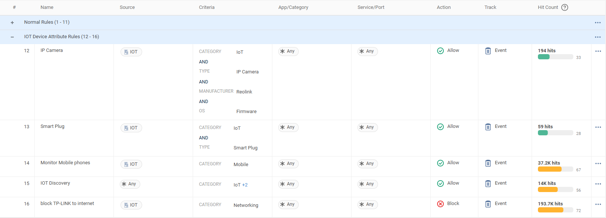

Why this matters
In retail, the store network is the revenue path: if the till can't authorise a card, the store stops selling. Yet the estate that carries cardholder data is usually the least engineered part of the business — flat networks assembled store by store over years, a single consumer-grade broadband line, and whatever kit the last refit left behind.
PCI DSS 4.0 raises the bar on demonstrating that controls actually operate — continuously, not just in the weeks before the assessor arrives. Across hundreds of stores that is unmanageable with per-site firewalls and manual evidence gathering. The objective: make every store network segmented, resilient and centrally evidenced — without sending an engineer to a single site.
What a typical store estate looks like today
Scope creeps across everything
On a flat network, the guest Wi-Fi, the CCTV cameras and the digital signage sit beside the payment devices — so they are all assessed alongside them. Segmentation is the recognised way to reduce scope, but nobody wants to deploy and manage a firewall per store to get it.
Fragile and expensive to run
One broadband line means an outage stops card payments. Any change, failure or refresh means a truck roll — multiplied by hundreds of stores, that is the single biggest line item in store IT operations.
Audit evidence is manual
Firewall configs, change records and logs live in different tools per region or per store generation. Assessment time means weeks of screenshots and spreadsheets — and the answer is stale the day after it's collected.
“How many separate networks does a typical store run today — and are they actually separate, or just different SSIDs on one LAN? Who owns segmentation between POS and everything else — networking or security? And what did evidence collection look like at your last assessment: how long, how many teams, how many spreadsheets?”
One socket per store, one policy for the estate
Each store gets a Cato Socket with LTE/5G failover — shipped to site and plugged in by store staff, with configuration pulled from the cloud (zero-touch, no engineer visit). The Socket's LAN firewall enforces micro-segmentation between VLANs on site: POS and cardholder data on one network, staff, guest and cameras/IoT on their own — with lateral movement into the POS VLAN blocked at the store edge. Everything leaving the store is inspected at the nearest Cato PoP, where protection is always current and the same policy applies to every store. Cato operates a PCI DSS certified platform, and the CMA keeps policy, events and change history in one place — the evidence pack, on demand.
What this changes for the estate
Zero-touch store rollout
The Socket ships to the store; staff plug it in; configuration and policy arrive from the cloud. New store, refit or swap-out — no engineer visit, no truck roll.
Segmentation that shrinks scope
The LAN firewall isolates the POS/cardholder VLAN from guest, staff and IoT at the store edge. Properly implemented segmentation reduces the systems in PCI assessment scope — from "the whole store" to "the payment network".
Payments survive the broadband
LTE/5G failover on the same Socket keeps the tills authorising through a broadband cut — the difference between an incident ticket and a closed store.
One policy, every store
Segmentation and firewall rules are defined once and applied estate-wide. No per-store firewall configs to drift apart; a change lands everywhere at once.
Always-current protection
IPS, anti-malware and firewalling run in the Cato PoP and are updated by Cato — no store appliance to patch, no store-by-store signature rollouts. Cato operates a PCI DSS certified platform.
Audit evidence on demand
Policy, enforcement events and full change history (who changed what, when) live in one console. Evidence gathering becomes an export, not a project.
PCI DSS 4.0 themes, mapped
Keep the conversation at theme level — the QSA decides scope and applicability, Cato provides the controls and the proof:
| Requirement theme | How the Cato platform helps |
|---|---|
| Network security controls & segmentation | LAN firewall isolates the cardholder VLAN in every store; FWaaS governs everything leaving the site — one rule set, estate-wide. |
| Reducing assessment scope | Segmentation keeps guest Wi-Fi, cameras and signage out of the cardholder environment, so the assessed footprint shrinks. |
| Protecting systems from malware & attacks | IPS and anti-malware inspect store traffic at the PoP, kept current by Cato — no store-side patching. |
| Logging & monitoring | Every allow and block across every store is an event in one place, retained centrally and searchable. |
| Evidence & documentation | Policy state, event history and the Audit Trail of configuration changes are exportable from the CMA. |
Typical retail policies — a starter rulebase
Segmentation only shrinks scope if the rules behind it are right. The rulebase below is a sensible retail default: lock the POS/cardholder VLAN to the payment path, give guest and IoT the narrowest breakout they need, keep store staff on sanctioned apps, and sweep the estate for the traffic classes that have no business on a store network. It maps back to the PCI DSS 4.0 themes above — that table is the why, this is the how. The rows mix engines: rules 1–2 are the LAN firewall (a global policy scoped to the store VLANs in the rulebase, enforced locally on the Socket), rules 3–7 the Internet firewall (FWaaS), and row 8 is a network / bandwidth rule — all defined once and inherited by every store.
Treat this as a starting point, not a finished policy. Deploy every rule monitor-first so you can see what each store actually does before you enforce, then tune destinations, categories and scoping to the real estate in a policy workshop. Payment allowlists, sanctioned-app lists and IoT vendor clouds differ store to store — validate them, don't assume them.
| # | Name | Source | App/Category / Service | Action | Track |
|---|---|---|---|---|---|
| 1 | POS / CDE — payment path only | POS / CDE VLAN | Payment processor allowlist — acquirer / gateway FQDNs, HTTPS only | Allow | Event |
| 2 | POS / CDE — deny all other egress | POS / CDE VLAN | Any other destination — internet, other VLANs, wider LAN | Block | Event |
| 3 | Cameras & IoT — vendor & firmware only | Cameras & IoT VLAN | Vendor cloud & firmware-update destinations only | Allow | Event |
| 4 | Cameras & IoT — deny general internet | Cameras & IoT VLAN | Internet (Any) outside the allowlist above | Block | Event |
| 5 | Guest Wi-Fi — internet breakout only | Guest Wi-Fi VLAN | Internet (Any) — internal / RFC1918 ranges denied, bandwidth-capped | Allow | Event |
| 6 | Store staff — sanctioned SaaS | Store staff VLAN | Sanctioned app categories (Business, Collaboration); risky URL categories blocked | Allow | Event |
| 7 | Estate-wide — block P2P & anonymisers | Any | App categories: P2P / file-sharing, anonymisers & proxies | Block | Event |
| 8 | Payments failover priority (network rule) | POS / CDE VLAN | Payment processor service — active/standby WAN, LTE holds priority for the CDE | Prioritise | Event |
Retail scenarios
Seasonal pop-up store
Ship a spare Socket to the unit; staff plug it into whatever broadband is available and it pulls the estate policy on day one — segmented POS, guest and cameras from the first hour of trading, zero-touch, no engineer on site.
Store refit or relocation
The policy follows the Socket, not the postcode. Move the unit, plug it in at the new address, and the same VLAN plan and rulebase reappear — nothing to rebuild by hand, nothing to re-scope.
Franchisee segregation
Scope rules per group so each franchisee's stores see only their own policy and traffic, while head office keeps the estate-wide guardrails — the CDE egress deny and the P2P / anonymiser block — sitting above them.
Assessor visit
Hand the assessor an evidence pack straight from the console — the live rulebase, firewall block events per store and the Audit Trail of who changed what — instead of a fortnight of screenshots, all tied to the themes mapped above.
How to run the demo
A demo tenant has no 400-branch retail estate — so narrate it as one. The HQ lab site stands in for a typical store (Socket, multiple VLANs, LAN firewall); an X1600 LTE site is the failover story. Every rule you show, add: “this is defined once and applies to every store.”
-
Frame the estate
Monitor → Topology
Show the connected sites and their live link state. Narrate the retail pattern: “imagine each of these is a store — same Socket, same VLAN plan, same policy. What follows is what every one of them gets.”
-
Show the store build — VLANs behind one Socket
Network → Sites → the HQ lab site → Networks
Walk the site's network ranges: a POS/cardholder VLAN, guest, staff and a camera/IoT VLAN. Make the zero-touch point here — the Socket shipped to site and was plugged in by non-technical staff; everything you're looking at was configured centrally.
-
Isolate the POS VLAN with the LAN Firewall
Security → LAN Firewall
In the global LAN Firewall policy, scope a rule to this store's VLANs: block guest and IoT VLANs from reaching the POS VLAN, allow POS devices to their payment destinations only. The policy is managed centrally but enforced locally on the Socket. Point at the hit counters — the segmentation isn't a diagram claim, it's enforced and counted at the store edge.
-
Prove the tills keep trading — LTE failover
Network → Sites → the X1600 LTE site
Open the X1600 LTE site and show its WAN links. Describe the failure drill: pull the primary connection and the Socket fails over to LTE — the card payments keep flowing, and Topology shows the link-state change in seconds. In a store estate this is the difference between a quiet alert and a store that can't sell.
-
One internet policy for store devices
Security → Internet Firewall
Show rules scoped to the store VLANs: POS devices restricted to their update and payment services, guest Wi-Fi on a tolerable-use policy, cameras pinned to their vendor cloud only. Change a rule and make the point: it just changed for every store at once.
-
Close on evidence — the assessor pack
Administration → Audit Trail
Show the change history: who changed which rule, when, from where. Then flip to Monitor → Events filtered to LAN firewall blocks. Policy, its enforcement, and its change record — “that's the evidence you spent weeks assembling last time, from one console.”
How to prove it in the customer's tenant
The demo narrates segmentation in our tenant; the PoV is a store pilot in theirs — one pilot store's network brought under the LAN Firewall, the POS/CDE VLAN isolated from guest Wi-Fi and back-office monitor-first, and exactly one agreed crossing flipped to Block with the event to show for it. The mechanism is the one the OT segmentation PoV verified against the knowledge base — an account-level LAN Firewall policy, scoped per site and VLAN in the rule, enforced locally on the Socket — what changes in retail is what hangs on it: PCI DSS assessment scope. So say the honest sentence at the workshop and again at the readout: segmentation reduces scope only when the QSA determines it does. This pilot produces the segmentation evidence and the CDE traffic-path document that conversation needs; it never produces a compliance verdict. Agree the criteria below before configuring anything, per Running a Cato PoV — and the store-side rule that sits above the framework: the tills keep trading. Nothing blocks until a week of events has shown what the tills actually use.
| Success criterion | What we demonstrate | Evidence artefact | Where in the CMA |
|---|---|---|---|
| Pilot store's POS/CDE VLAN isolated — monitor-first, then one agreed block | The store's VLANs come under a LAN Network rule with a catch-all Allow · Event rule above the default block; after a full trading week, the agreed guest-Wi-Fi → POS crossing is flipped to Block in a change window | The rulebase capture and the blocked-crossing event — the artefact the QSA conversation opens with | Security → LAN Firewall · Monitor → Events |
| The store's CDE traffic path documented for the QSA conversation | One page stating what stays local on the Socket (LAN-firewalled east-west) and what crosses the PoP (payment authorisation and updates through the Internet firewall), with the enforcement point named at each hop | The path document, plus the Topology and event captures behind every line of it | Monitor → Topology · Monitor → Events |
| Sector blueprint slice enacted monitor-first | Rows 1–2 of the starter rulebase run as Allow · Event through a full trading week — every destination the tills actually use is in events before any deny exists, and no payment traffic drops unexplained | The rules with a week of hits, and the observed payment-destination list reconciled against the acquirer's allowlist | Security → LAN Firewall · Monitor → Events |
| Segmentation evidence pack assembled | A dated pack a QSA can read without a console login: rulebase captures, weekly event exports, the Audit Trail extract for the pilot window, and the store's device inventory with its Segmentation Flows view | The pack itself, every artefact dated inside the pilot window | Monitor → Events · Administration → Audit Trail · Home → Devices |
| Store link resilience witnessed once | Broadband pulled in a change window; the tills keep authorising over the LTE standby link — run exactly as drill D2 of the resilience drill card, which owns the expected behaviour, evidence and rollback | The Passive Connected event, the transport capture and the stopwatch note, stamped on the drill card | Network → Sites → Site Monitoring · Monitor → Events |
- Socket version — re-verify, don't assume: the LAN Firewall is an account-level policy enforced locally on the Socket, supported from Socket v22 per the LAN Firewall KB; device-attribute criteria need Socket v26 or higher per the policy KB. Check the pilot store's Socket before the plan promises either.
- Real VLANs, really crossing the Socket: POS/CDE, guest, staff and cameras/IoT defined as network ranges on the pilot store's Socket, with their traffic actually traversing it. A guest SSID bridged onto the store LAN by an access point is a name, not a network — the LAN Firewall can only segment traffic it sees on distinct ranges.
- The payment allowlist, in writing: the acquirer / payment-gateway destinations and ports from whoever owns the payment estate — before rule 1 of the blueprint exists. The pilot will verify this list against observed traffic; it must not start from a guess.
- Two named owners: whoever answers for store trading signs the block window and the rollback; whoever faces the QSA (the compliance owner or ISA) sits in the workshop, because the path document is written for them.
- LTE fitted if resilience is promised: the D2 drill needs an LTE/5G-equipped Socket (or external modem) configured as last resort, plus a small agreed data budget — otherwise strike the resilience criterion rather than fudge it.
- A change window outside trading hours for the one block flip, with the rollback (disable one rule) written into the change record before the rule exists.
- Not needed: TLS inspection, client rollout or identity integration — everything here is enforced on the Socket and touches no till, which also keeps the CDE out of any inspection debate for the duration.
Configuration walkthrough
-
Walk the store build and take the inventory baseline
Network → Sites → the pilot store → Networks Assets → Device Inventory
Confirm the VLAN plan matches the diagram above — POS/CDE, guest, staff, cameras/IoT as ranges on the Socket — and note anything that doesn't. Then open the store's device inventory: classification is passive, from the site's traffic, and can take up to 12 hours per the Device Inventory KB — start it before the workshop ends. Capture the Segmentation Flows Sankey (device type → application → protocol → destination) as evidence item zero; be precise about what it shows — internet-bound flows by device type, which is exactly what the guest and IoT allowlists will be built from, not an east-west CDE map.
-
Baseline the crossings before any policy exists
Monitor → Events
Before any LAN rule is written, intra-site traffic that matches no LAN Firewall rule is treated as WAN traffic and handled at the PoP — so guest and back-office conversations towards the POS VLAN are already visible in events today. Capture a dated "before" picture of who crosses into the CDE. This is the baseline the blocked-crossing event will be read against at the readout.
-
Bring the store VLANs under the LAN Firewall — in one change
Security → LAN Firewall
Create a LAN Network rule scoped to the pilot store and its VLANs — matching east-west traffic now routes locally on the Socket instead of hairpinning via the PoP. Know what this does: every LAN Network rule carries a default ANY-ANY Block as its last child rule, so scoping the store in with no allow rules is already enforcement. Monitor-first therefore means creating the catch-all in the same change: an Any-Any Allow with Track = Event above the default block. Net effect: nothing drops, and every crossing between store VLANs lands in Events.
-
Watch a full trading week, then write the CDE path document
Monitor → Events Monitor → Topology
A quiet Tuesday is not a store: cover peak trading, delivery mornings and end-of-day reconciliation before you call the picture complete. Then write the one-page CDE traffic path for the QSA conversation: which flows stay local on the Socket under the LAN Firewall (till ↔ store server), which cross the PoP through the Internet firewall (payment authorisation, till updates), and where each control is enforced. Write it as evidence input, not a conclusion — the QSA scopes the environment; this page is what makes that conversation short.
-
Author the payment-path rules from evidence — still monitoring
Security → LAN Firewall
Enact the blueprint slice: rule 1 (POS → payment-processor allowlist) as Allow · Event, and the rule 2 deny-candidate (POS → anything else) also as Allow · Event for now — a written record of what the block would catch. Reconcile a week of its events against the acquirer's list: the difference — a backup gateway, a tokenisation service, a till-update CDN — is precisely the traffic that would have stopped trading if you had blocked on day one. Extend the allowlist from evidence, then agree the flip.
-
Flip the agreed block and produce the crossing event
Security → LAN Firewall
In the booked window, with the store owner's sign-off, set the agreed rule to Block with Track = Event — guest Wi-Fi (and, if agreed, cameras/IoT) into the POS/CDE VLAN. Then prove it: from a laptop on the guest SSID, attempt to reach a till's address and watch the blocked-crossing event land, enforced on the Socket at the store edge. That event, next to step 2's baseline showing the same crossing succeeding, is the money artefact of the whole pilot. Rollback is the same rule, disabled — seconds, not a change request.
-
Show the store link die once — and the tills not notice
Network → Sites → Site Monitoring → Real Time
Run the LTE standby drill exactly as drill D2 of the resilience PoV prescribes — that card owns the expected behaviour, the evidence set and the rollback, so run it once, witnessed and timed, and stamp the result rather than re-deriving it here. The retail framing is the only addition: while the broadband is down, a test card transaction authorises over cellular.
-
Assemble the evidence pack and read it out
Monitor → Events Administration → Audit Trail
One indexed pack: the dated LAN Firewall rulebase captures with hit counts; weekly event exports (up to 250,000 events per export, 31-day maximum range — export as the pilot runs, not at the end); the Audit Trail extract showing every pilot change attributed; the inventory and Segmentation Flows captures; and the CDE path document on top. Be straight about formats: the CSV rule export covers the Internet firewall, WAN firewall, TLS Inspection and Application Control policies (per the KB) — the LAN Firewall rulebase is evidenced with dated captures and its event stream instead. Read the pack against the criteria table, per the PoV framework.
What good output looks like
Three exhibits carry the readout: the blocked guest-to-POS crossing event beside its "before" baseline; the CDE path document with the rulebase captures behind it; and the indexed pack the compliance owner takes into the QSA meeting. The rulebase below shows the destination shape for the store's cameras-and-IoT VLAN once monitor mode graduates — device-attribute allows logging events, and a block rule accumulating hits.

Troubleshooting
POS devices never appear in Device Inventory
Discovery is passive and classification can take up to 12 hours — and tills behind a routed payment switch present the router's MAC, not their own, so attribute-based detection sees one device where there are twelve. Segment the CDE with IP-range rules, use the Cato DHCP service where MAC detection matters, and never make the CDE criteria depend on device attributes.
The store is flatter than anyone admitted
One subnet, separation by SSID name only — then there is no VLAN boundary for the LAN Firewall to scope to. The pilot starts one step earlier: stand up the POS VLAN for the pilot store, and use step 2's baseline events as the written justification. That finding is itself PoV output, not a failure.
Guest Wi-Fi bleeds into the store LAN
Access points bridging the guest SSID onto the staff VLAN are the classic leak. Check whether guest traffic actually arrives at the Socket on its own VLAN tag: if it doesn't, fix the AP and switch trunking first — the LAN Firewall segments the ranges it sees, and a capture proving the bleed is a strong exhibit in its own right.
Franchise realities stall the pilot
Franchisee-owned broadband, third-party EPOS maintainers and no head-office change authority can stall a store pilot before week one. Pick a corporate-owned store for the pilot; the franchise answer is in the scenarios above — per-group policy scoping under estate-wide guardrails — and belongs in the rollout conversation, not the PoV.
The payment allowlist would have broken the tills
Processor estates sprawl — backup gateways, tokenisation services, update CDNs the acquirer's document never mentioned. This is why rule 2 runs as Allow · Event for a full trading week first: the "would-block" events are the gap list. Reconcile, extend the allowlist, and only then flip. If a destination can't be explained, that goes to the payment provider, not into the rulebase.
Expected traffic never lands in LAN Firewall events
Intra-site traffic matching no LAN rule is treated as WAN traffic and handled at the PoP — look in WAN Firewall events first, then check the LAN Network rule's scope covers both VLANs in the conversation. And keep the catch-all Event rule temporary: the KB recommends tracking only high-priority LAN rules in steady state, so retire it as the explicit allows take over.
Gotchas & clean exit
- Scope reduction is the QSA's determination, full stop. The pilot produces segmentation evidence and a documented CDE path; whether that removes guest Wi-Fi and cameras from assessment scope is the assessor's call on the customer's whole environment. Write "evidence for the scoping conversation" in every artefact — never "out of scope" as a conclusion, and never a compliance claim.
- Cato's own PCI DSS certification is supplier due diligence, not the customer's compliance. Cite it as published on the trust page and stop there — the compliance evidence-pack PoV is the fuller treatment of that boundary.
- Scoping a VLAN into the LAN Firewall is not passive: the default ANY-ANY Block under a LAN Network rule means a store scoped in without its catch-all allow is being enforced immediately — in a trading store. Build the LAN Network rule and the monitor rule as one change, never two.
- One store is one store: the pilot proves the mechanism on one till estate; segmenting four hundred stores is the project it justifies. The account-level policy makes the rollout the same rulebase re-scoped — say that in the wrap-up, don't imply it has already happened.
Exit: unwinding is one action — disable the block rule and the store behaves exactly as before; keep or retire the monitor rules as the customer prefers. The better outcome is that nothing is unwound: the monitor rulebase becomes row one of the estate rollout, the CDE path document goes to the QSA meeting, and the blocked-crossing event goes in front of whoever signs the assessment budget. Every change made and removed during the pilot stays recorded in Administration → Audit Trail — which is itself the closing exhibit of change control.